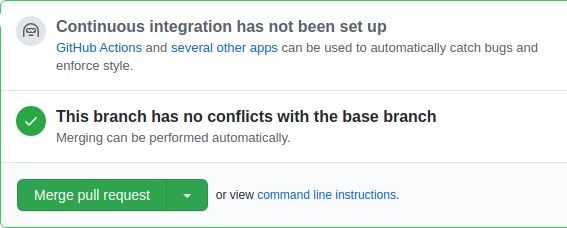

Utiliser Git et GitHub
Table of Contents
1. Pourquoi git? (ou Mercurial, Subversion, …)
un DVCS 1 un outil de gestion de version distributé. Sans cet outil et en supposant une équipe d'une personne, on pourrait en approximer l'effet en créant un fichier par version. On se retrouverait vite avec, par exemple:
index_version_1.html index_version_2.html index_version_3.html
Pas top et nous n'avons pas qu'un fichier, si on ajoute simplement une feuille de style:
index_version_1.html index_version_2.html index_version_3.html style_version_1.css style_version_2.css style_version_3.css
A ce moment, des questions se posent. Lorsque l'on modifie le fichier index, on le sauvegarde sous un nouveau nom. Le fichier css change-t-il aussi de version? Ou doit-on se souvenir des correspondance entre les versions html et les versions css? Et ce n'est que le début des soucis.
Heureusement, depuis SCCS (1972), les programmeurs ont des outils de contrôle de version (VCS). Celui que nous verrons est Git, qui fait partie d'une vague plus récente de VCS distributés, comme Mercurial. On les dit distribués car la totalité du code et des informations de versionnage sont localement disponibles sur chaque machine utilisée dans le dévelopement du projet.
Un modèle totalement décentralisé apporte beaucoup d'avantage mais quelques inconvénients:
- difficile d'identifier une source canonique pour les utilisateurs du code et les personnes qui le transforme en logiciel pour les gestionnaires de packets (apt sous Debian, Chocolatey sous Windows, homebrew sous MacOs).
- les machines des dévelopeurs n'ont pas toujours accès au réseau, n'ont pas d'URI et changent d'IP régulièrement. Il faut beaucoup communiquer pour obtenir les changements de chacun.
En pratique, une des machines va avoir un statut particulier et être lié à une URL fixe, par exemple sur GitHub, qui apporte en plus un gestionnaire de ticket, un wiki, une interface accessible et agréable.
Il existe des alternatives: GitLab, par exemple, et Gitea que l'on peut très facilement héberger soi-même.
2. La boucle
Un VCS permet de gérer les changements apportés à un ensemble de fichiers (un project, un programme, un répertoire). Dans sa plus simple expression, les étapes d'un projet sous VCS sont:
- On créé un répertoire où mettre notre code
- On y initialise un repo ce qui commande tranforme le dossier courant en repo git. Cette initialisation est implicite lorsque l'on clone un repo.
- On créé/modifie un ou plusieurs fichiers (avec VS Code, Notepad++, redirection bash).
- On indique à Git les fichiers que l'on souhaite ajouter à la zone d'index (staging area)
- On fait un commit pour créer une nouvelle version du code (snapshot, révision). Par défault, git ne prend en compte que les fichiers dans sa zone d'index pour les commits. On peut ainsi choisir d'ignorer certaines modifications.
- On retourne à l'étape 3
3. Git en action
Voici une interaction dans le terminal qui illustre les étapes d'un git complètement local (donc pas sur GitHub).
$ mkdir foo $ cd foo $ git init Initialized empty Git repository in /.../konexio/.git/ $ echo "I like honey" > winnie.txt $ ls winnie.txt $ git status On branch master No commits yet Untracked files: (use "git add ..." to include in what will be committed) winnie.txt nothing added to commit but untracked files present (use "git add" to track) $ git add winnie.txt $ git status On branch master No commits yet Changes to be committed: (use "git rm --cached ..." to unstage) new file: winnie.txt $ git commit -m "created a file" [master (root-commit) 2df84fe] created a file 1 file changed, 1 insertion(+) create mode 100644 winnie.txt $ git status On branch master nothing to commit, working tree clean
Les étapes une par une
git init: On initialise le repo, on transforme le répertoire courant en repoecho "I like honey" > winnie.txtOn dit a bash d'écrire le texte "I like honey" dans le fichier "winnie.txt"git status: On demande à git l'état du repo. Il nous indique la branche active, les fichiers nouveaux, modifiés, effacés et s'ils sont tracked (dans le staging area) ou non.git commit -m "created a file": On fait un commit, nous avons une première version de notre code.
Remarquez que la dernière invocation de git status est laconique: rien n'a changé depuis le dernier commit, le contenu du répertoire correspond à la dernière version local du code.
4. Création d'un repo local+GitHub
Malheureusement, notre git est local, personne ne peut admirer notre travail. Inacceptable!
Pour commencer on va sur GitHub pour créer un nouveau repo. Sur la page d'accueil, on a le bouton ou, pour éviter un click fatiguant, on va directement sur https://github.com/new.
On arrive sur la page de création de repo:
On donne un nom à notre repo, j'ai choisi "bubble-tea" parce que c'est une boisson mignonne et sympa.
On click sur Create Repository
GitHub nous montre une nouvelle page avec des informations utiles sur les prochaines étapes.
Git nous propose 4 stratégies suivant notre situation
- La méthode experte, GitHub nous donne le strict nécessaire. En copiant l'adresse et avec git clone, c'est pratique si on a pas encore de répertoire chez nous.
- Si on a pas encore de fichier chez nous, on peut utiliser la seconde option. Les deux différences principales avec la première méthode et qu'ici GitHub nous prend par la main et qu'on a la possibilité de changer facilement le nom de la branche principale. Dans le screenshot on l'appelle "main", on peut aussi l'appeler "sakura", "je-suis-un-yaourt", etc. Avec la méthode #1 on a une branche par défaut qui s'appelle "master", équivalente à la branche "default" sous Mercurial.
- Si on a déjà un répertoire local avec des fichiers sous contrôle de version, on suit ces instructions. Attention, il faut avoir déjà fait un git init et un premier commit.
- La dernière option ne nous concerne pas vraiment, il s'agit d'importer des projets depuis d'autres systèmes de contrôle de version comme Mercurial.
Il existe une autre situation: un repo existe déjà, quelqu'un d'autre la créée et vous aimeriez voir le code et peut-être contribué à son amélioration. Elle est très similiare à la première stratégie.
4.1. La méthode experte
Avec l'adresse que nous donne GitHub, que l'on copie, on va sur son Terminal (iTerm | Cmder…) et on clone. Voilà l'interaction dans mon terminal, j'ai ajouté des commentaires précédés de #.
# On clone le repo ~/Documents/dev$ git clone git@github.com:grenle/bubble-tea.git # git nous dit qu'il le clone dans le répertoire bubble-tea # on peut spécifier ce repertoire avec la même commande clone: # git clone <adresse-du-repo-github> <repertoire-local> # par exemple: # git clone git@github.com:grenle/bubble-tea.git ./masala-chai Cloning into 'bubble-tea'... warning: You appear to have cloned an empty repository. # On va dans le repertoire ou habite notre clone ~/Documents/dev$ cd bubble-tea/ # Notre repo est vide et triste. Ouvrons le dossier dans # VS Code ~/Documents/dev/bubble-tea$ code . # Avec VS Code, j'ai créé (control+n) un nouveau fichier # j'y ai écrit du texte et j'ai sauvegardé le fichier # (control+s) sous le nom README.md ~/Documents/dev/bubble-tea$ ls README.md # On ajoute le nouveau fichier à la zone d'index de git ~/Documents/dev/bubble-tea$ git add README.md # Et on fait un commit ~/Documents/dev/bubble-tea$ git commit -m "added a readme" # Git nous montre qu'il travaille dur [master (root-commit) d667d45] added a readme 1 file changed, 2 insertions(+) create mode 100644 README.md # Encore un effort, git, maintenant on veut push'é notre # code sur GitHub ~/Documents/dev/bubble-tea$ git push origin master # Et voilà, git est content et nous aussi: Enumerating objects: 3, done. Counting objects: 100% (3/3), done. Delta compression using up to 12 threads Compressing objects: 100% (2/2), done. Writing objects: 100% (3/3), 272 bytes | 272.00 KiB/s, done. Total 3 (delta 0), reused 0 (delta 0) To github.com:grenle/bubble-tea.git * [new branch] master -> master
Par convention, dans un repo et plus généralement dans un projet, on met un README avec des informations pertinentes comme une présentation rapide, des instructions d'installation et d'usage, une liste des plateformes compatibles, etc. GitHub, suivant cette convention, affiche le contenu de ce fichier sur la page d'accueil du repo. Par convention également, quoique moins universelle, le readme est un .md, qui dénote un fichier text markdown. Il s'agit de texte "amélioré", par exemple un ligne qui commence par un # est un titre (h1 en html). L'interwebs est plein de documentation sur ce format mais celle de GitHub est intéressante parce qu'elle présente markdown ainsi que les extensions que GitHub comprend et qui sont bien utiles sur les repo.
Pour les autres stratégies, il suffit de recopier les lignes
que vous donne GitHub. Attention (bis), pour la méthode
intitulée "…or push an existing repository from the
command line", il faut que le projet local soit déjà sous
contrôle de version avant de tapper les commandes sur
GitHub, donc git init, git add <nom-de-fichier> et git
commit -m <mon message>
Vous allez peut-être accumuler plein de repos sans intérêt en apprenant git. Nettoyer tout ça est trivial: on efface le repertoire local et on va sur la page github du repo, dans les "settings" (deuxième barre de menu), tout en bas de la page, il y a le bouton pour effacer le repo.
5. Ressources
Voici quelques liens utiles pour réviser les bases et aller plus loin:
- La documentation de GitHub.
- Le guide git, qui fait partie des guides publiés par github.
- Pro Git, a peu près tout sur git, très complet.
6. En cas de souci
6.1. J'ai fait commit sans -m
Si VS Code s'ouvre, écrivez votre message de commit sur la première ligne et sauvegardez ce fichier. Vous pouvez le fermer et revenir sur votre terminal.
Si un autre éditeur apparait celui que vous avez paramétré, comme VS Code, écrivez votre message de commit (sans '#' au début), sauvegardez et quitté l'éditeur.
Si vous voyez ça:
Vous êtes sous Nano, écrivez votre message de commit. Puis Control+O pour sauvegarder, entrée (ou enter) pour confirmer et finalement Control+x pour quitter Nano.
Si vous voyez ce truc:
Vous êtes sous Vi(m). La prise en main n'est pas intuitive. Faites échap (ou escape) puis tappez ":q!" et entrée/enter. Ayant quitté sans message, vous allez devoir refaire le commit. Tachez de ne pas oublier le message: commit -m "<mon-message>", par exemple:
git commit -m "added a css rule for a lovely title"
Note: Malgré sa prise en main peu intuitive, Vim (et Vi,
son ancêtre plus limité) est un éditeur très puissant et
incontournable. C'est un outil classique, comme git ou
make à connaître. De plus, il est très léger. Combiné avec
tmux, par exemple, vous pouvez obtenir une excellente
alternative à Visual Studio Code, IntelliJ qui fonctionnera
très bien même sur du materiel limité.
7. Branches Git
Une branche permet de créer une chronologie alternative afin de travailler sur son code en indépendance d'autres changements apportés. Elle permet également d'isoler les effets d'une action spécifique (réparation d'un bug, ajout d'une fonctionnalité, nettoyage d'un bout de code) afin de pouvoir considérer ces seuls changements et de les accepter dans la branche parente. Pour être un peu plus concret, voilà quelques branches semi-permanentes vaguement-standard qu'on peut observer dans la nature:
- master / release, pour la version publiée
- dev / unstable, pour la version sur laquelle on travaille
- hotfixes, un peu comme un release surprise, on la créé en divergeant du master pour régler un problème identifié sur la version en production et elle sera réintégrée au master et à la branche de dévelopement.
Quand on initialise git sur un repo tout neuf et qu'on fait un premier commit, il n'y a qu'un branche. Chaque commit suivant, chaque version du code, est un évènement dans une suite linéaire.
master-v1 -> master-v2 -> master-v3 -> ...
Quand on fait une branche, on obtient une nouvelle chronologie basée sur le noeud de départ de la branche. Par exemple, avec une branche "add-authors" éphémère destinée à ajouter un fichier contenant les auteurs du projet, dérivée de master v1:
Pour simuler une branche master et un branche
add-authors évoluant simultanément:
- On créé la branche add-author, on la selectionne
- Sur add-author on fait un premier commit
- On revient sur la branche master et on y fait deux commits. Ces changements ne sont pas visibles sur add-author
- On revient sur la branche add-authors pour y faire un commit. Ces changements ne sont pas visibles sur master. Par politesse pour master on fusionne les modifications faites sur master depuis la création de la branche ou depuis la dernière fusion.
- De retour sur master, on peut fusionner les modifications faites sur add-authors. Notre projet à une nouvelle featurette, c'est cool.
Par implémentation et par culture, la créations de branches est très encouragée sous git. Le plus souvent, on va créer une branche à partir du master ou de la branche de dévelopement pour chaque bug qu'on fix ou chaque fonctionnalité qu'on ajoute.
8. Pratique
8.1. Mise en place
Avant toute chose, il nous faut un repo. Si c'est encore flou, on voit plus haut, c'est expliqué. J'ai créé un repo "arboreal-adventures" sur GitHub que j'ai cloné localement, j'y ai ajouté un fichier README.md avec le contenu suivant.
# Arboreal Adventures
Le logiciel le plus véloce, le plus léger et le plus facile à installer du
monde: pas de code.
Et j'ai fait mon commit et mon push. En allant sur GitHub, je vois que la plateforme à compris ce qu'était un README.md: un texte de présentation du projet avec des instructions markdown de présentation (# pour le titre par exemple).
Figure 1: Visualisation du README.md sur GitHub
Hmm…il faudrait quand même qu'on sache qui a créé ce projet. On met ça dans un fichier AUTHORS.md, mais on fait ça sur une branche. On va dans notre terminal, à l'endroit de notre repo. Là on a deux choix.
On peut être litéral et utiliser les commandes branch et checkout pour créer et selectionner une branche.
git branch add-authors git checkout add-authors
Ou on est paresseux comme Gregory et on utilise le racourci checkout -b qui fait deux-en un.
git checkout -b add-authors
Git est sympa, il nous prévient qu'il a Switched to branch 'add-authors'. C'est parti, on peut créer un fichier AUTHORS.md dans VS Code. Le mien à le contenu suivant:
# La super team - [Hiyam](http://www.example.com/hi) - CEO - [Shoma](http://www.example.com/shoma) - CTO - [Florentine](http://www.example.com/flo) - Un genre de biscuit ## Merci Plein de gens, je me souviens plus bien. Rapidement, les nouveautés markdown: ## pour sous titre (h2 en html), [titre](adresse) pour un lien (<a href="adresse">titre</a>) et "-" pour un item de list (<li>, le <ul> est implicite).
Avec ce changement, on va faire add, commit et push comme il faut.
git add AUTHORS.md
git commit -m "added authors"
git push origin add-authors
On peut maintenant aller sur GitHub et naviguer jusqu'au repo sur lequel on travaille. Quand on fait un pull request (PR), on demande à une branche (ici master) de bien vouloir intégrer les changements d'une autre (ici add-authors).
Si on va sur notre repo, on voit un truc nouveau sur la page:
Figure 2: Commencer la comparaison/fusion avec GitHub
On peut clicker là dessus ou aller directement au lien proposé par git, on arrive au même endroit, la page pour faire une PR. Sur cette page, GitHub nous dit que master peut recevoir sans conflit les modification de add-authors:
Figure 3: Conflits ou absence the conflit pour une fusion the branche
Et on a un bouton pour lancer ce fameux pull-request:
Figure 4: Lancer la fusion
Hop, on clique et on arrive sur la page de la PR. On peut aussi selectionner l'onglet "Pull request" pour voir toutes les PR.
GitHub nous y répète que tout est bon, pas de conflit, on a juste à appuyer sur le bouton pour faire le merge/la fusion/l'inclusion de changements. Encore deux click. Et un:

Et deux, pour être sûr d'être sûr:
Git hub nous propose ensuite d'effacer la branche inutile:
Ca c'est GitHub qui le dit, il n'est pas évident qu'elle soit si inutile que ça. D'un autre côté, il est bon d'avoir une certaine hygienne de branche, sinon on ne s'y retrouve plus. On va l'enlever mais on est des grands, on fait ça dans le terminal, nous.
Dans notre terminal, on saisi git checkout master pour selectionner cette branche. On va voir…
$ git checkout master $ ls README.md
Oh noes! Woe is me! La fripouille, on a pas du tout le nouveau fichier! Pas de panique, on a fait le merge sur GitHub, notre repo local n'est pas au courant.
$ git pull $ ls AUTHORS.md README.md
Ouf, tout va bien. On a créé une branche pour y faire une action. Sur cette branche, on retrouve le cycle add/commit/push. Contents de notre travail, on a fait une pull request que l'on a accepté, c'est clairement un travail de qualité. Et on a synchronisé notre repo local pour que notre branche master soit à jour, avec le nouveau fichier.
On va juste faire un peu de ménage:
$ git branch -d add-authors # effacer la branche locale $ git push origin --delete add-authors # effacer la branche GitHub
Voilà. On a bien mérité du bubble-tea, je trouve. Ou un cookie, avec un verre de lait.
Footnotes:
Distributed Version Control System